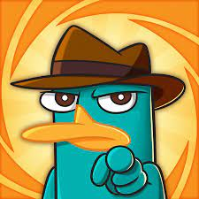

- Czy wiedziałeś że : Jad dziobaka – toksyna zawierająca około 250 zidentyfikowanych związków chemicznych, wytwarzana przez dziobaki, które są jednym z niewielu gatunków jadowitych ssaków.
- Ciekawostka : Dziobak nie ma żołądka. Jego przełyk łączy się bezpośrednio z jelitami.
- Ciekawostka nr 2 : Składniki jadu dziobaka badane są pod kątem stworzenia środków przeciwbólowych (głównie chodzi o ból przewlekły).

Dziobak australijski[20], dziobak[21][e] (Ornithorhynchus anatinus) – prowadzący częściowo wodny tryb życia endemiczny dla wschodnich
stanów Australii (w tym Tasmanii) gatunek ssaka z grupy stekowców, jedynych członków tej gromady składających jaja. Jest ostatnim
istniejącym do dziś przedstawicielem swego rodzaju i rodziny, choć znaleziono skamieniałości licznych przedstawicieli tych taksonów.
Ma wiele nietypowych jak na ssaka cech: składa jaja, wydziela jad i ma dziób. Ujrzawszy go po raz pierwszy, europejscy przyrodnicy byli bardzo
zdezorientowani, niektórzy sądzili nawet, że mają do czynienia z dobrze spreparowanym oszustwem. Należy do kilku jadowitych ssaków.
Samiec posiada na tylnych łapach ostrogi wydzielające jad zdolny wywołać silny ból u człowieka. Unikatowe cechy dziobaka czynią go
ważnym obiektem badań biologii ewolucyjnej i czynią zeń ikonę Australii. Wybierano go jako maskotkę imprez narodowych, przedstawia
go też rewers australijskiej dwudziestocentówki. Stanowi także zwierzęcy symbol Nowej Południowej Walii[22].
Do początku XX wieku polowano na niego dla futra, obecnie podlega ochronie w całym zasięgu swego występowania. Choć programy rozmnażania w
niewoli odniosły bardzo ograniczony sukces, a dziobak jest wrażliwy na zanieczyszczenie środowiska, nie jest bezpośrednio zagrożony wyginięciem.
Kolejne odkrycia nie rozwiały wątpliwości, wprost przeciwnie. W 1802 sir Everard Home, chirurg i anatom, zauważył jądra położone w jamie brzusznej, jak u gadów, a nie w mosznie, jak u ssaków, natomiast obie
płcie posiadają kloakę – jest to również gadzia cecha. Umieścił on dziobaka w oddzielnym szczepie ssaków. Niedługo później ręką Meckela opisano ostrogę jadową i gruczoły mlekowe, charakterystyczne z kolei dla ssaków.
Od gadów dziobaka odróżnia też obecność przepony. Wymieszanie cech gadzich i ssaczych
doprowadziło uczonych do wniosku, że dziobak stanowi brakujące ogniwo pomiędzy tymi dwiema grupami zwierząt.
Obecność gruczołów mlekowych przekonało część badaczy, że dziobak jest ssakiem. Jednakże
uznawano wtedy, że ssaki nie składają jaj. Nawet sam Meckel nie był przekonany do uznania dziobaka za ssaka, uważał też, że to co odkrył,
to nie były właściwe gruczoły mlekowe. Postulował umieszczenie dziobaka w osobnej gromadzie. Geoffroy również wydzielił osobną gromadę,
którą nazwał Monotremata (stekowce)[23]. Nazwa ta wywodzi się właśnie od pojedynczego otworu kloaki[31]. Należała doń także kolczatka